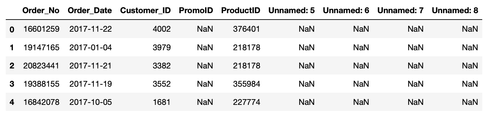
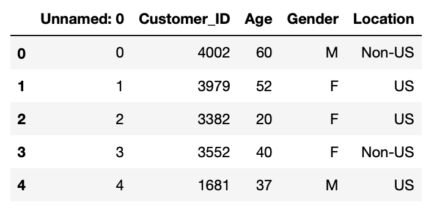

.png)
Often we will only want to use only certain columns from our data frames. The simplest way to select a subset of columns is to simply pass a list of the column names you want to select in between brackets.
In the orders data frame we have a few “unnamed” columns that don’t contain any data.
Let’s select the columns that are useful by passing a list to the data frame.
While the above method is perhaps the simplest method it is not suitable in all cases. What this does is create a view of the original data frame meaning that it’s not a separate data frame and any operations you perform on the view will also be performed on the full original data frame.
Using the above method is fine if you no longer require the original data frame but can be problematic if you need to use both data frames and want to perform different operations on each. For this purpose we can use Loc operations.
Loc operations work by declaring both the rows and columns we want to select but we are going to use it to just select the columns. In order to select columns using loc we pass either a list of column names or a column name range. Unlike the previous method, loc operations create unique data frames which means that we can use both the original and new data frame. Let's see how to do the same column selection we did above using the Loc operation.
iLoc works in the same way as Loc but instead of declaring columns names you declare column numbers starting at 0 for the first column.
Pandas drop function allows us to remove either columns or rows from a data frame. We do this by passing a list of column names (or row names) we want to get rid of. In the customers data frame like the orders data frame we have an unnamed column that doesn’t contain any information.
Let’s use the drop function to get rid of the column.
Here we have passed in two parameters that we will encounter in several other Pandas functions. The axis parameter refers to which direction Pandas will attempt to perform an operation. In other words are you referring to columns or rows. Axis=0 is the default and refers to the row wise operations while axis=1 refers to column wise operations. In the example above we wanted to drop a column so we wanted Pandas to look across the columns for a column with the name given name.
The inplace parameter tells Pandas to either perform the operation on the existing data frame (True) or return a copy of the data frame (False). This is set to False by default but in the above example we wanted to apply this to the data frame in question.
Anytime we only want a subset of columns we can either select the columns we need or drop the columns we don’t need. Which method you use will ultimately depend on your particular use case and is often dictated by how many columns you want to keep or drop. For example, if you have 100 columns and want to keep 99 of them then it’s easier to drop the one column you don’t want rather than select the 99 that you do.
Pandas also provides a function to rename either columns or rows. We do this by using the rename function and passing a python dictionary where the key is the current name and the value is the new name.
{‘Current_Name’ : ‘New_Name’}
In the orders data frame the column that contains the product ID is called ‘ProductID’ however in the other data frames it’s called ‘Product_ID’. Let’s rename the orders data frame column to match the other data frames.
As you can see, the rename operation also requires the axis parameter to tell it we are renaming a column and we can use the inplace parameter to perform the operation directly on the existing orders data frame.
Previously we have seen that you can view column names by calling .columns on a data frame. You can actually also reassign this if you want to rename a large number of columns. Let’s do this now to rename all the columns in the returns data frame.